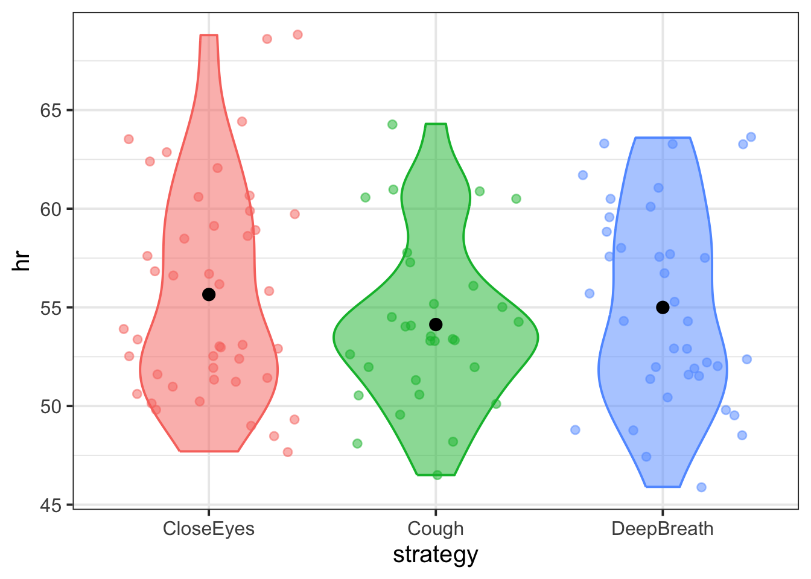

| variable | description |
|---|---|
| age | Age of participant (years) |
| anx | Anxiety measure (z-scored) |
| strategy | Pre-test calming strategy (CloseEyes, Cough, DeepBreath) |
| hr | Average heart rate (in bpm, beats per minute) during test |
07: Sum coding
This week, you’ll TODO
NoteGet set up
- Open RStudio.
- Create a new .Rmd file for this week’s exercises.
- Save it somewhere you can find it again.
- Give it a clear name (for example,
dapr2_lab07.Rmd). - In the first code chunk, load the packages you’ll need this week (and install them if you don’t have them already):
tidyverse
RQ: Controlling for people’s pre-existing anxiety levels, is coughing before a polygraph test significantly associated with a lower-than-average heart rate during the test?
Data dictionary:
NoteMore detail about this dataset
Law enforcement in some countries regularly rely on ‘polygraph’ tests as a form of ‘lie detection’. These tests involve measuring heart rate, blood pressure, respiratory rate and sweat. However, there is very little evidence to suggest that these methods are remotely accurate in being able to determine whether or not someone is lying.
Researchers are interested in if peoples’ heart rates during polygraph tests can be influenced by various pre-test strategies, including deep breathing, or closing their eyes. They recruited 142 participants (ages 22 to 64). Participants were told they were playing a game in which their task was to deceive the polygraph test, and they would receive financial rewards if they managed successfully. At the outset of the study, they completed a questionnaire which asked about their anxiety in relation to taking part. Participants then chose one of three strategies to prepare themselves for the test, each lasting one minute. These were “deep breathing”, “close your eyes”, or “cough” (apparently coughing is a way to immediately lower heart rate!). Then the average heart rate of each participant was recorded during their polygraph test.
Set up and plot data
Question 1
Read in the data from https://uoepsy.github.io/data/polygraph.csv and store it in a variable named heartrate.
heartrate <- read_csv('https://uoepsy.github.io/data/polygraph.csv')
Question 2
Make a violin plot (including jittered points and group means) to show how heart rate hr is associated with each pre-test calming strategy.
🗂️ See TODO flash cards.
heartrate |>
ggplot(aes(x = strategy, y = hr, fill = strategy, colour = strategy)) +
geom_violin(alpha = 0.5) +
geom_jitter(alpha = 0.5) +
stat_summary(fun = mean, geom = 'point', colour = 'black', size = 3) +
theme(legend.position = 'none') +
NULL
Set up sum coding
Question 3
First, convert strategy into a factor.
Then, run the following code to show the contrast matrix that R would use by default if we used strategy as a predictor right now:
contrasts(heartrate$strategy)What contrast coding scheme does this contrast matrix represent?
🗂️ See TODO flash cards.
heartrate <- heartrate |>
mutate(
strategy = factor(strategy)
)contrasts(heartrate$strategy) Cough DeepBreath
CloseEyes 0 0
Cough 1 0
DeepBreath 0 1This contrast coding scheme is treatment coding, which we got to know last week.
By default, R will always treatment-code a categorical predictor unless we tell it otherwise.
Question 4
Tell R to apply sum coding to strategy using the function contr.sum().
Give the dummy variables (the columns of the contrast matrix) more useful names that tell you which level is coded as 1 in each variable.
Finally, generate the contrast matrix for strategy again and verify that it looks the way you’d expect.
TipCode hint
Replace the ... in the code below with the appropriate values.
contrasts(...$...) <- contr.sum(...)To change the dummy variable names:
dimnames(contrasts(...$...))[[2]] <- c('...', '...')
contrasts(heartrate$strategy) <- contr.sum(3)
contrasts(heartrate$strategy) [,1] [,2]
CloseEyes 1 0
Cough 0 1
DeepBreath -1 -1For the first dummy variable, CloseEyes is coded as 1, and for the second, it’s Cough. So:
dimnames(contrasts(heartrate$strategy))[[2]] <- c('CloseEyes', 'Cough')Sense check:
contrasts(heartrate$strategy) CloseEyes Cough
CloseEyes 1 0
Cough 0 1
DeepBreath -1 -1Good!
Think ahead to model interpretation
Question 5
The model we fit later will have two coefficients which correspond to the strategy variable: strategyCloseEyes and strategyCough. (We know this because there are two columns in the contrast matrix we generated above, and two columns \(\rightarrow\) two dummy variables \(\rightarrow\) two coefficients.)
Write a brief sentence that describes what each coefficient will mean/represent, now that we’ve sum-coded them.
Which of those coefficients will help you address the research question?
🗂️ See TODO flash cards.
strategyCloseEyes: The difference between estimated heart rate whenstrategy = CloseEyesand the grand mean estimated heart rate.strategyCough: The difference between estimated heart rate whenstrategy = Coughand the grand mean estimated heart rate.
The research question: Controlling for people’s pre-existing anxiety levels, is coughing before a polygraph test significantly associated with a lower-than-average heart rate during the test?
- The coefficient that will let us address this RQ is
strategyCough.
Question 6
This is a synthesis/review/challenge question.
The RQ specifies that we must control for people’s pre-existing anxiety levels, which are contained in the continuous numeric variable anx. Therefore, we’ll include anx as a predictor in our model, and we’ll get a coefficient estimate for anx. Write a brief sentence about what this coefficient will mean/represent.
🗂️ See TODO flash cards.
Recall that anx has been z-scored, so anx = 0 represents mean anxiety, and anx = 1 represents one SD above the mean.
anx: Holding strategy constant (you can think of this as averaging over all strategies), how much the average heart rate increases/decreases when anx increases by one SD.
Question 7
Using the predictors you’ve thought about in the last couple questions, write the mathematical formulation of this model.
Which \(\beta\) coefficient will help you address the research question?
🗂️ See TODO flash cards.
\[ \text{heart rate} = \beta_0 + (\beta_1 \cdot \text{strategy}_\text{CloseEyes}) + (\beta_2 \cdot \text{strategy}_\text{Cough}) + (\beta_3 \cdot \text{anx}) + \epsilon \]
The \(\beta\) coefficient that’s relevant for the research question is \(\beta_2\), the coefficient of \(\text{strategy}_\text{Cough}\).
Fit and interpret the model
Question 8
Fit the linear model in R and look at the model summary. Also use confint() to generate the 95% CIs for each coefficient.
🗂️ See TODO flash cards.
hr_mdl <- lm(hr ~ strategy + anx, data = heartrate)
summary(hr_mdl)
Call:
lm(formula = hr ~ strategy + anx, data = heartrate)
Residuals:
Min 1Q Median 3Q Max
-8.7146 -3.4269 -0.3907 3.0082 11.5010
Coefficients:
Estimate Std. Error t value Pr(>|t|)
(Intercept) 53.9153 0.4897 110.103 < 2e-16 ***
strategyCloseEyes 3.0337 0.7769 3.905 0.000165 ***
strategyCough -0.8445 0.6502 -1.299 0.196767
anx 3.3982 0.7432 4.573 1.29e-05 ***
---
Signif. codes: 0 '***' 0.001 '**' 0.01 '*' 0.05 '.' 0.1 ' ' 1
Residual standard error: 4.567 on 108 degrees of freedom
Multiple R-squared: 0.1749, Adjusted R-squared: 0.152
F-statistic: 7.631 on 3 and 108 DF, p-value: 0.0001127confint(hr_mdl) 2.5 % 97.5 %
(Intercept) 52.944716 54.8859760
strategyCloseEyes 1.493639 4.5736640
strategyCough -2.133189 0.4442816
anx 1.925126 4.8712857
Question 9
Briefly interpret each of the model’s four coefficients.
Then, write one sentence that responds to the research question. Bonus: use APA formatting to report the relevant coefficient estimates.
🗂️ See TODO flash cards.
(Intercept):- The grand mean heart rate for somebody with average anxiety (equal to 0, because it’s z-scored) is estimated to be 53.92 bpm.
strategyCloseEyes:- Holding anxiety constant, closing one’s eyes before the polygraph test is associated with an increase of 3.03 bpm compared to the grand mean bpm.
- This estimate is significantly different from zero (\(p\) < .001).
strategyCough:- Holding anxiety constant, coughing before the polygraph test is associated with a decrease of 0.84 bpm compared to the grand mean bpm.
- This estimate is not significantly different from zero (\(p\) = .20).
anx:- Holding strategy constant, increasing one SD of anxiety is associated with an increase of 3.40 bpm.
- This estimate is significantly different from zero (\(p\) < .001).
Responding to RQ: When controlling for anxiety, coughing before a polygraph test is not significantly associated with a lower-than-average heart rate during the polygraph test (\(b\) = 0.84, 95% CI [–2.13, 0.44], \(p\) = .20)
Choosing coding schemes for different RQs
Question 10
When you want to model a categorical predictor, you need to choose between treatment coding or sum coding. In order to make this choice, you must think about what coding scheme will let you address your specific RQ the best.
Based on the phrasing of the following RQs, which contrast coding scheme would you choose, and why? (And if you choose treatment coding, what would your reference level be, and why?)
- Do schoolchildren learn better when their classroom contains natural light compared to artificial light?
- What kind of background sound is associated with people spending more money in restaurants: no music, pop music, or classical music?
- Is life satisfaction in London lower than the average life satisfaction in the UK?
- Do students in Psychology spend more time studying than students in PPLS on average?
- In a Stroop task, do autistic people perform better than neurotypical people?
Bonus: Write down a note to your future self where you describe, in your own words, how you make this decision.
🗂️ See TODO flash cards.
- Do schoolchildren learn better when their classroom contains natural light compared to artificial light?
- The RQ asks about a direct comparison between two levels of a predictor, so we want treatment coding.
- A good reference level: artificial light, so that the slope coefficient tells us how much learning increases when a classroom gets natural light.
- What kind of background sound is associated with people spending more money in restaurants: no music, pop music, or classical music?
- The RQ asks about a direct comparison between two levels of a predictor, so we want treatment coding.
- A good reference level: no music, because it’s a natural baseline to compare different kinds of music to.
- Is life satisfaction in London lower than the average life satisfaction in the UK?
- The RQ asks about comparing a particular level of a predictor (here, places in the UK) to the average, so we want sum coding.
- Do students in Psychology spend more time studying than students in PPLS on average?
- The RQ asks about comparing a particular level of a predictor (here, subject areas in PPLS) to the average, so we want sum coding.
- In a Stroop task, do autistic people perform better than neurotypical people?
- The RQ asks about a direct comparison between two levels of a predictor, so we want treatment coding.
- A good reference level: neurotypical, so that the slope coefficient tells us how much better performance is for autistic people.